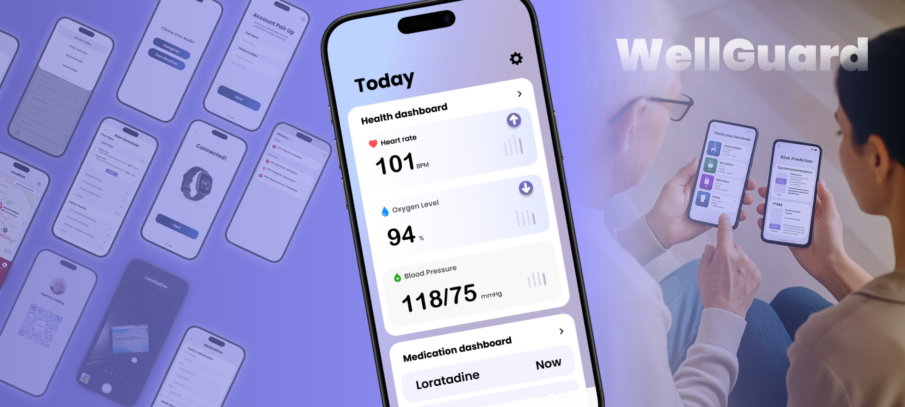

UI Design
WellGuard
The app combines health monitoring, medication reminders,
and emergency alerts to support daily care and emergencies.
It turns wearable data into clear alerts,
so caregivers are notified only when necessary.
The system focuses on timely support, helping care receivers stay safe and independent.